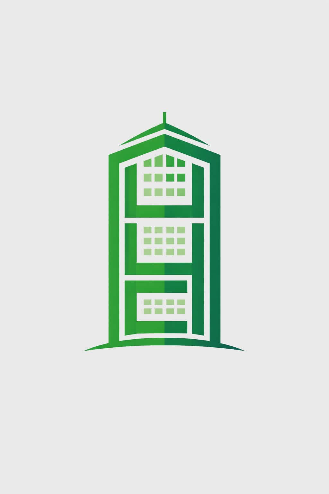

UCC Information PortalThis 4-year program is a hybrid course combining the fundamentals of Computing Science with the basics of business courses like management, accounting, finance and other office management essentials. Students are trained in designing, developing systems and managing information systems such as transaction processing systems, automation systems, and enterprise-based systems.
The Bachelor of Science in Computer Science combines a core of Computer Science subjects with depth in supporting fields. Students gain strong programming skills and computing fundamentals that prepare them to adapt to new technologies and trends.
The field of Entertainment and Multimedia Computing is the study and use of concepts, principles,
and techniques of computing in the design and development of multimedia products and solutions. It
includes various applications such as science, entertainment, education, simulations, and advertising.
The program enables the students to be knowledgeable of the whole pipeline of Game Development and
Digital Animation projects. The students will acquire the independence and creative competencies to
articulate project design and requirements of new projects, not necessarily based on standard templates.
This 4-year program is a hybrid course combining the fundamentals of Computing Science with the basics of business courses like management, accounting, finance and other officemanagement essentials. Students are being honed to designing, developing systems and managing information system setups like transaction processing system, automation system,and other enterprise-based systems.